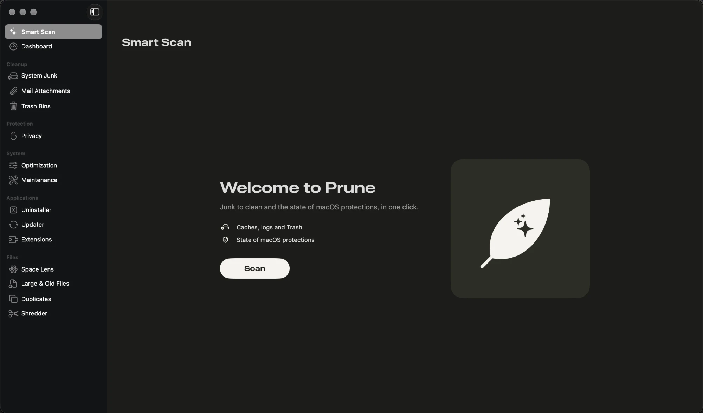

O seu Mac, mais leve. Mais limpo. Mais seguro.
Limpe lixo, desinstale apps por completo, proteja a sua privacidade e vigie o seu Mac, tudo numa app nativa. Gratuito e de código aberto.
macOS 14 ou posterior. Apple silicon e Intel.

Tudo o que o seu Mac precisa, num só lugar
Análise Inteligente
Lixo a limpar e o estado das proteções do macOS, num clique.
Painel
Disco, memória, CPU, rede, bateria e SIP, Gatekeeper, Firewall, FileVault e XProtect num relance.
Limpeza
Caches, registos, ficheiros temporários, Xcode e gestores de pacotes, ficheiros do iPhone, anexos do Mail e Lixo.
Privacidade
Histórico, cookies e caches do Safari, Chrome, Edge, Brave, Opera, Vivaldi, Arc e Firefox. Palavras-passe e marcadores ficam intactos.
Aplicações
Desinstalação completa, restos de apps removidas, atualizações (Sparkle e Homebrew) e extensões.
Ficheiros
Mapa do disco, ficheiros grandes e antigos, duplicados, fotos semelhantes e destruição segura.
Sistema
Itens de arranque, processos e tarefas de manutenção: DNS, Spotlight, Launch Services e disco.
Barra de menus
CPU, memória, disco, rede e bateria em tempo real.
Como funciona
Descarregue e instale
Abra o DMG e arraste o Prune para Aplicações.
Autorize uma vez
Abra-o em Privacidade e Segurança e dê Acesso Total ao Disco com o assistente incluído.
Analise e reveja
Clique em Analisar, veja o que foi encontrado e limpe num clique.
Feito para nunca apagar o que não deve
- Nada é apagado sem a sua confirmação. Pode rever cada item antes de limpar.
- As pastas do sistema e as pastas pessoais estão protegidas, seja o que for que selecione.
- Ficheiros pessoais e apps vão para o Lixo. Caches e registos são apagados diretamente. Pode mudar isto nas Definições.
- As estatísticas de uso são anónimas e só são enviadas com o seu consentimento. Nunca incluem nomes de ficheiros, pastas ou apps.
Requisitos
- Sistema
- macOS 14 Sonoma ou posterior
- Processador
- App universal para Apple silicon e Intel
- Idiomas
- Inglês e português, conforme o idioma do sistema
- Preço
- Gratuito, licença GPL-3.0
Perguntas
Porque é que o macOS bloqueia o Prune da primeira vez?
O Prune é um projeto gratuito e de código aberto, feito por programadores independentes, não por uma empresa. Para abrir sem aviso, uma app para Mac tem de ser notarizada pela Apple, o que exige uma conta paga de Apple Developer. O Prune ainda não é notarizado, por isso o macOS não consegue confirmar quem o fez e pergunta-lhe primeiro.
É um aviso de que o programador é desconhecido, não um sinal de que algo está errado com a app. Como o código é aberto, não precisa de acreditar só na nossa palavra:
- Leia cada linha do código no GitHub.
- Confirme que o seu download é o que publicámos: cada versão lista os checksums em
SHA256SUMS, eshasum -a 256 Prune-*.dmgmostra o seu. - Compile a app com
./scripts/build_app.sh.
Para a abrir, vá a Definições do Sistema, Privacidade e Segurança e clique em Abrir mesmo assim. Só precisa de o fazer uma vez. Ou execute no Terminal:
xattr -dr com.apple.quarantine /Applications/Prune.appPorque precisa de Acesso Total ao Disco?
Caches, registos e dados dos browsers estão em pastas que o macOS protege. Sem acesso, o Prune não os consegue ver nem limpar.
Apaga as minhas palavras-passe ou marcadores?
Não. A limpeza de privacidade remove apenas histórico, cookies e caches.
Posso desfazer uma limpeza?
Ficheiros pessoais e apps vão para o Lixo, de onde os pode recuperar. Caches e registos são removidos diretamente, porque as apps voltam a criá-los.
Como atualizo?
Descarregue a nova versão e substitua a app em Aplicações. As novidades estão no registo de alterações.
É mesmo gratuito?
Sim. O Prune é de código aberto, com licença GPL-3.0 e o código no GitHub.